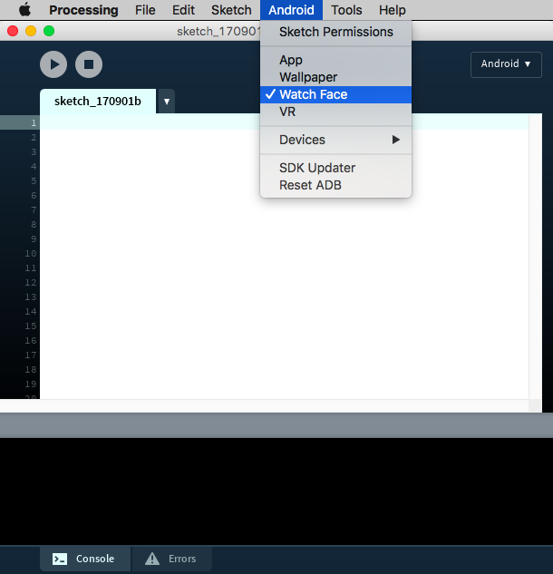

Caras de Reloj
En este tutorial veremos como usar el modo Android para desarrollar caras de reloj interactivas.
Relojes inteligentes
Android Wear nos permite crear caras personalizadas para relojes inteligentes, con las cuales podemos representar el tiempo de manera original al aprovechar las capacidades de visualización e interacción de estos dispositivos También es posible obtener datos de sensores corporales (número de pasos, frecuencia cardíaca) a efectos de visualizar la actividad física del usuario. Sin embargo, el desarrollo de las caras de relojes demanda algunas consideraciones especiales, a raíz de las limitaciones de estos dispositivos presentan en relación al tamaño de la pantalla y la duración de la batería. Google ha publicado algunas pautas para el diseño de caras de reloj.
Preparativos
Antes que nada, programar un reloj inteligente requiere emparejar el reloj con un teléfono que funcionará como un puente entre la computadora en la que está ejecutando Processing y el reloj. Para hacerlo, debes configurar los dispositivos para la depuración a través de Bluetooth, como está explicado aquí. Una vez hecho esto, podrás seleccionar la opción "Watch Face" en el menú de Android:

Una cara de reloj simple
En nuestro primer intento de crear una cara de reloj con Processing, solamente mostremos la hora usando texto. La estructura del bosquejo es muy sencilla:
void setup() {
fullScreen();
frameRate(1);
textFont(createFont("SansSerif", 30 * displayDensity));
fill(255);
}
void draw() {
background(0);
translate(0, +wearInsets().bottom/2);
if (!wearAmbient()) {
String str = hour() + ":" + minute() + ":" + second();
float w = textWidth(str);
text(str, (width - w)/2, height/2 + 24);
}
}
Detengámonos a a observar un par de detalles en este código. Primero, el número de cuadros mostrados por segundo es establecido en 1 porque el texto solo cambia una vez por segundo, con lo cual no hace falta actualizar la pantalla más rápido (lo cual consumiría más batería). En segundo lugar, la cara solo se dibuja si la función wearAmbient() retorna falso. La razón de esto es que, por el contrario, si retornara verdadero, nos estaría indicando que el usuario del reloj no lo está mirando. En esta situación, el reloj entra en el llamado "modo ambiente" para ahorrar batería. En el modo ambiente, la pantalla se actualiza solo una vez por minuto, y se recomienda mantener la mayor parte de la pantalla en negro y mostrar solo una versión simplificada de la cara.
Asimismo, usamos la función wearInsets() para obtener las dimensiones de los bordes de la pantalla. En particular, el recuadro inferior ayuda a centrar correctamente la imágen en la pantalla en los relojes que tienen una "barbilla" en la parte inferior de la pantalla, como el Moto 360. De esta manera, todo lo que es dibujado en nuestro bosquejo se desplaza hacia abajo en la mitad de ese valor para que esté correctamente centrado. Otra nueva variable en Processing para Android y que es específica para caras de reloj es isRound, que nos permite saber desde el bosquejo si la forma del reloj es redonda o cuadrada. Para obtener una lista completa de todas las variables que son específicas para programar caras del reloj, consulta la página de referencia.
Representando el tiempo
Puedes usar los valores de tiempo para generar patrones y formas que cambian a medida que pasan las horas, los minutos y los segundos. En el siguiente código, pintamos la pantalla en negro de izquierda a derecha a medida que el tiempo avanza desde el comienzo hasta el final del día. También podemos tocar la pantalla para agregar puntos en el área que todavía no ha sido pintada y hacer que desaparezcan una vez que son alcanzados por el borde negro:
ArrayList<PVector> dots;
int totalMin = 24 * 60;
void setup() {
fullScreen();
frameRate(1);
dots = new ArrayList<PVector>();
}
void draw() {
int time = hour() * 60 + minute();
if (time == 0) dots.clear();
float x = map(time, 0, totalMin, 0, width);
if (wearAmbient()) {
background(0);
noFill();
stroke(255);
line(x, 0, x, height);
for (PVector d: dots) {
ellipse(d.x, d.y, 10, 10);
}
} else {
background(255);
fill(0);
noStroke();
rect(0, 0, x, height);
for (PVector d: dots) {
ellipse(d.x, d.y, 10, 10);
}
}
for (int i = dots.size()-1; i >= 0; i--) {
PVector d = dots.get(i);
if (d.x < x) {
dots.remove(i);
}
}
}
void mousePressed() {
dots.add(new PVector(mouseX, mouseY));
}
Ahora hagamos vibrar el reloj cuando un punto es alcanzado. Para acceder al vibrador en el reloj, primero debemos habilitar el permiso apropiado. Esto lo hacemos esto abriendo la opción "Sketch Permissions" en el menú de Android y seleccionando el permiso apropiado:

Después de importar las clases de Vibrador y Contexto, inicializamos la instancia del vibrador en setup() como se demuestra continuación:
import android.os.Vibrator;
import android.content.Context;
ArrayList<PVector> dots;
int totalMin = 24 * 60;
Vibrator vibrator;
void setup() {
fullScreen();
frameRate(1);
dots = new ArrayList<PVector>();
Context context = getContext();
vibrator = (Vibrator) context.getSystemService(Context.VIBRATOR_SERVICE);
}
El método vibrador() nos permite generar vibración por un período de tiempo expresado en milisegundos. Es decir que para hacer vibrar al reloj por medio segundo:
for (int i = dots.size()-1; i >= 0; i--) {
PVector d = dots.get(i);
if (d.x < x) {
dots.remove(i);
vibrator.vibrate(500);
}
}
Contador de pasos
La mayoría de los dispositivos Android, incluidos los relojes inteligentes, incluyen un sensor para contar pasos, también llamado podómetro, al que accedemos de la misma manera que otros sensores que usamos anteriormente. La estructura del bosquejo sería como sigue:
import android.content.Context;
import android.hardware.Sensor;
import android.hardware.SensorManager;
import android.hardware.SensorEvent;
import android.hardware.SensorEventListener;
SensorManager manager;
Sensor sensor;
SensorListener listener;
void setup() {
fullScreen();
frameRate(1);
Context context = getContext();
manager = (SensorManager)context.getSystemService(Context.SENSOR_SERVICE);
sensor = manager.getDefaultSensor(Sensor.TYPE_STEP_COUNTER);
listener = new SensorListener();
manager.registerListener(listener, sensor, SensorManager.SENSOR_DELAY_NORMAL);
}
void draw() {
}
public void resume() {
if (manager != null) {
manager.registerListener(listener, sensor, SensorManager.SENSOR_DELAY_NORMAL);
}
}
public void pause() {
if (manager != null) {
manager.unregisterListener(listener);
}
}
class SensorListener implements SensorEventListener {
public void onSensorChanged(SensorEvent event) { }
public void onAccuracyChanged(Sensor sensor, int accuracy) { }
}
En este código definimos el administrador, el sensor y el oyente de la misma manera que en los ejemplos de sensores anteriores. El valor del sensor que contiene el número de pasos es event.values[0], que podemos almacenar en una variable definida en el bosquejo:
int offset = -1;
int steps;
...
class SensorListener implements SensorEventListener {
public void onSensorChanged(SensorEvent event) {
if (offset == -1) offset = (int)event.values[0];
steps = (int)event.values[0] - offset;
}
public void onAccuracyChanged(Sensor sensor, int accuracy) { }
}
Finalmente, podemos inicialización la fuente de texto en setup(), y usar el número de pasos en la función de dibujo, por ejemplo aquí simplemente lo imprimimos como mensaje de texto:
void setup() {
fullScreen();
frameRate(1);
textFont(createFont("SansSerif", 30 * displayDensity));
textAlign(CENTER, CENTER);
fill(255);
Context context = getContext();
manager = (SensorManager)context.getSystemService(Context.SENSOR_SERVICE);
sensor = manager.getDefaultSensor(Sensor.TYPE_STEP_COUNTER);
listener = new SensorListener();
manager.registerListener(listener, sensor, SensorManager.SENSOR_DELAY_NORMAL);
}
void draw() {
background(0);
translate(0, +wearInsets().bottom/2);
if (!wearAmbient()) {
String str = steps + " steps";
float w = textWidth(str);
text(str, 0, 0, width, height);
}
}
Es posible guardar el número de pasos para realizar un seguimiento del perfil de actividad del usuario. Podemos usar las diferentes funciones disponibles en Processing para guardar y cargar datos en nuestro bosquejo de cara de reloj, por ejemplo, saveStrings() y loadStrings(). Sin embargo, debemos asegurarnos de que el permiso WRITE_EXTERNAL_STORAGE esté habilitado.